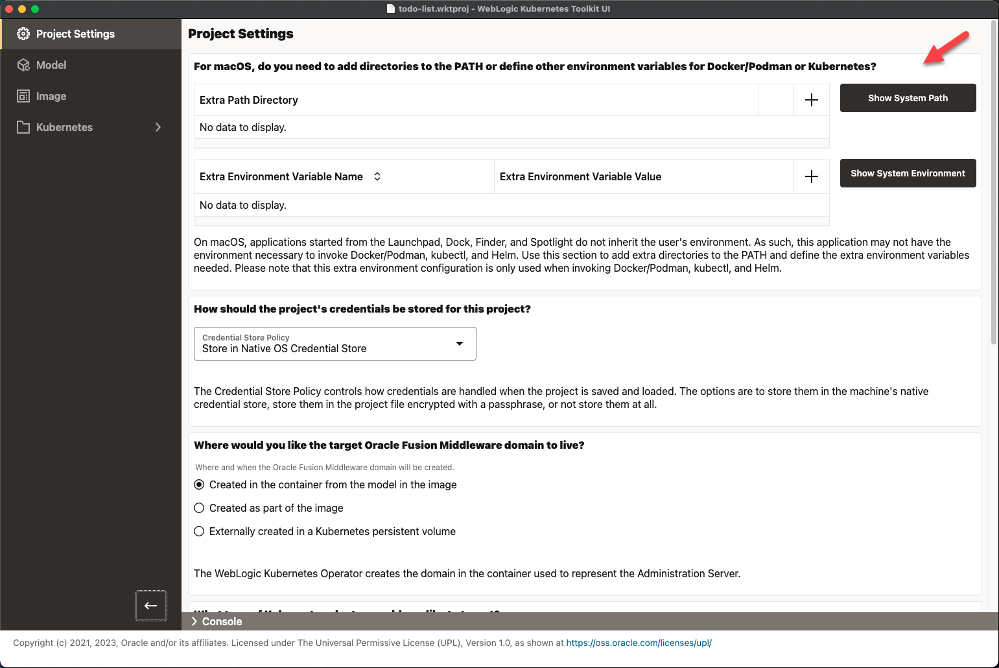

WKTUIを起動します。
WKTUIでは、統合開発環境(IDE)のプロジェクトのようなプロジェクトの概念を使用します。 新しいプロジェクトを作成します。
Fileメニューを使用して、New Projectを選択し、ディレクトリを選択して、ファイル名todo-list.wktprojを入力します。
この時点で、次のイメージに示すようなProject Settingsページが表示されます。
ノート: macOSで実行していない場合、この最上位パネルは表示されません: macOSの場合、PATHにディレクトリを追加するか、Docker/PodmanまたはKubernetesに他の環境変数を定義する必要がありますか。
WindowsやLinuxとは異なり、Finder、DockまたはLaunchpadから起動されるmacOS上のアプリケーションは、ユーザーの環境を継承しません。 WKTUIがオペレーティング・システムから継承する環境を表示するには、Show System PathおよびShow System Environmentを選択します。 ここでは、追加の環境設定は追加しません。 かわりに、必要なエラーが発生した場合は、これらを追加して戻ります。
WKTUIでは、様々な組織および異なるプロジェクトで資格証明を格納するためのセキュリティ標準が異なることが認識されています。 そのため、WKTUIにはプロジェクトの資格証明を格納する方法について、次の3つのオプションがあります:
Store in the Native OS Credential Store - このオプションを使用すると、各資格証明フィールドをオペレーティング・システムの資格証明ストア内の個別のフィールドに格納できます(Windows資格証明マネージャ、macOSキー・チェーンなど)。 このオプションを使用する場合、プロジェクト・ファイルには、資格証明ストアに格納されている各フィールドのインジケータのみが格納されます。 プロジェクトを開くと、WKTUIは資格証明ストアからメモリーに各資格証明をロードしようとします。 プロジェクトが保存されると、WKTUIは値を持つ各資格証明フィールドを資格証明ストアに書き込み、プロジェクト・ファイル内のマーカーを更新します。 このオプションを使用すると、ローカル・マシンに資格証明をセキュアに格納できます。 新しいマシンでプロジェクトを開こうとすると、資格証明が見つからないため、再入力する必要があります。
ノート: WKTUIの新しいバージョンでプロジェクトを開くと、アプリケーションが資格証明ストア内の資格証明にアクセスできるように、オペレーティング・システムによってログイン・パスワードの入力が求められる可能性があります。 プロンプトは資格証明ごとであるため、15個の資格証明フィールドがある場合、オペレーティング・システムによってパスワードの入力が15回求められます。
Store Encrypted in Project File - このオプションを使用すると、資格証明をプロジェクト・ファイルに直接格納できます。 WKTUIでは、指定したパスフレーズと最新のAES 256ビット暗号化アルゴリズムおよび手法を使用して、各資格証明フィールドが暗号化されます。 プロジェクトを開くと、WKTUIによって、メモリーにロードされる資格証明フィールドの復号化に使用する暗号化パスフレーズの入力が求められます。 暗号化パスフレーズを覚えている場合は、プロジェクト資格証明を失うことなく、プロジェクト・ファイルをマシンからマシンに簡単に移動できます。
None - このオプションは、資格証明が格納されないという点で、最も安全です。 つまり、プロジェクトを開くたびに資格証明を再入力する必要があります。
このプロジェクトでは、Store Encrypted in Project Fileオプションを選択して、Linuxで実行されているリーダーで簡単に実行できるようにします。
WebLogic Kubernetes Operator (WKO)には、Kubernetesで使用するために、WebLogicドメイン・ディレクトリを格納するための3つのメカニズムがあります:
Created in the container from the model in the image - このオプションでは、ドメインのWebLogic Deploy Tooling (WDT)モデルとイメージ内のWDTインストーラを指定すると、WebLogic Kubernetes Operatorによってドメインが作成され、自動的に更新されます。 このオプションはModel-in-Image (MII)とも呼ばれ、WKOはFromModelをコールします。
Created as part of the image - このオプションでは、イメージの作成時にドメインのWebLogic Deploy Tooling (WDT)モデルとWDTインストーラをWebLogic Image Tool (WIT)に提供し、WITはイメージ内にドメインを作成します。 このオプションはDomain-in-Image (DII)とも呼ばれ、WKOがImageをコールします。 ノート: WKOはこのオプションを推奨していません。
Externally created in a Kubernetes persistent volume - このオプションでは、Kubernetes永続ボリュームを作成し、その永続ボリュームにドメインを作成する必要があります。 このオプションはDomain-on-PV (DoPV)とも呼ばれ、WKOはこれをPersistentVolumeと呼びます。
ToDoリスト・アプリケーションに必要なのはWebLogic Serverのみで、Model-in-Imageメカニズムと適合するため、Created in the container from the model in the imageを選択します。
ここで、Kubernetesクラスタを使用して直接デプロイするか、WebLogic Kubernetes Operatorおよびイングレス・コントローラをインストールするか、Verrazzanoにデプロイするかを選択する必要があります。 クイックスタート・ガイドは両方のトラックをカバーしているため、従う予定のトラックに一致するオプションを選択します。
WebLogic Deploy ToolingまたはWebLogic Image Toolを必要とするアクションの実行時に使用するJavaインストールをWKTUIに指示する必要があります。 このプロジェクトでは、Oracle JDK 11ディレクトリのJavaホーム・ディレクトリを選択します。
WebLogic Deploy Toolingを実行するには、Oracle Homeディレクトリが必要です。 そのため、使用する予定のOracle Fusion Middlewareソフトウェアが含まれているOracle HomeディレクトリをWKTUIに知らせる必要があります。 このプロジェクトではWebLogic Server (WLS) 14.1.1が使用されているため、このフィールドをWLS 14.1.1インストールを含むディレクトリに設定します。
このプロジェクトの一部としてイメージを作成するため、イメージの構築にDockerを使用するか、Podmanを使用するかをWKTUIに指示する必要があります。 選択内容に一致する実行可能ファイルへのパスも指定する必要があります。 macOSでRancher Desktopを実行しているため、Dockerを選択し、Docker実行可能ファイル(たとえば、/Users/fred.jones/.rd/bin/docker)を指定します。 お客様の環境に最適な答えを提供します。
プロジェクト設定がほとんど完了したので、FileメニューのSave Allオプションを使用してプロジェクトを保存してから、ドメイン用のモデルを作成してください。 WKTUIでは、このプロジェクトで使用する暗号化パスフレーズの入力を求められます。 好きな値を選択してください。忘れないようにしてください。